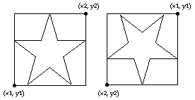

Draw.Star (x1, y1, x2, y2, Color : int)
The Draw.Star procedure is used to draw a star on the screen bounded by a rectangle described by the bottom left and top right corners of (x1, y1) to (x2, y2) using the specified Color. If y1 is greater than y2 then the star is drawn upside down.

This program will draw two stars beside each other. The first star will be in color 1 and the second star will be upside down and in color 2.
View.Set ("graphics")
Draw.Star (0, 0, 100, 100, brightred)
Draw.Star (150, 100, 250, 0, brightblue)
The Draw.Star procedure is useful for drawing the American flag. The screen must be in a "graphics" mode. See the View.Set procedure for details. If the screen is not in a "graphics" mode, an error will occur.
Exported qualified. This means that you can only call the function by calling Draw.Star, not by calling Star.
view_set.html, maxx.html, maxy.html and the various procedures in the drawmodule.html unit.